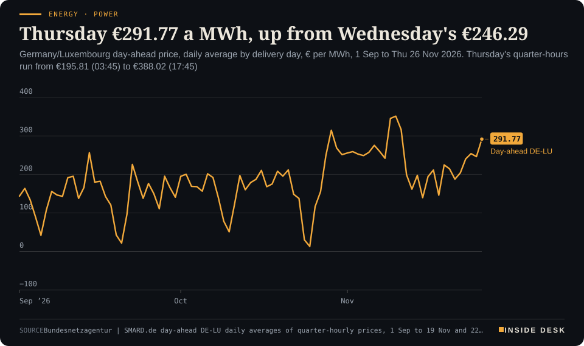
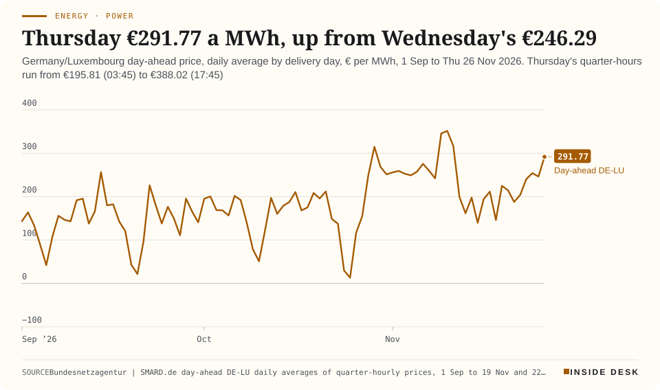
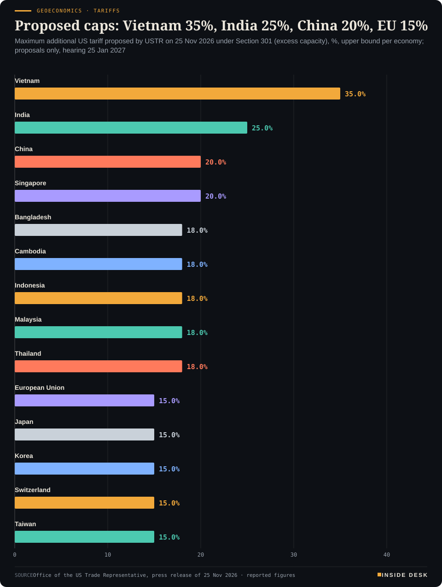
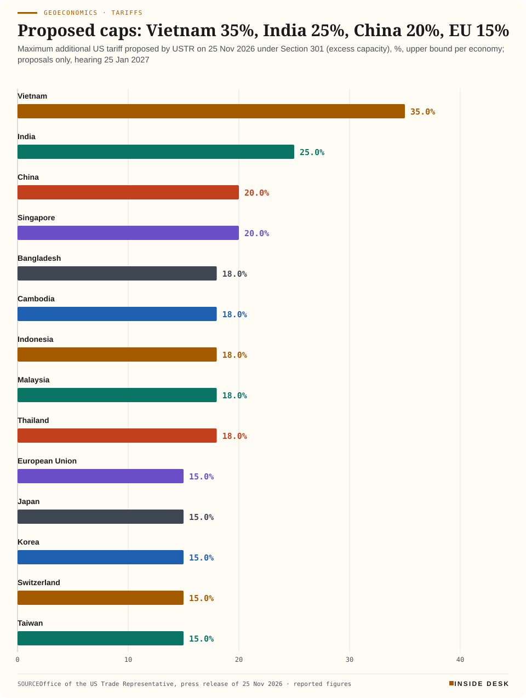
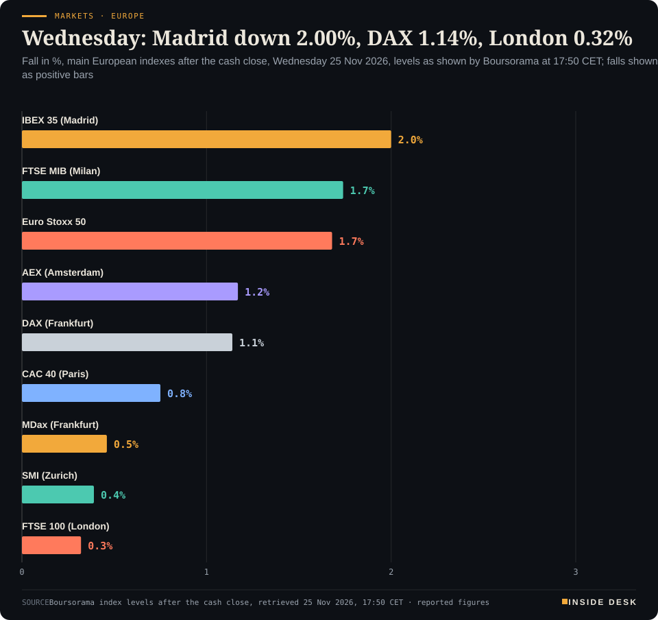
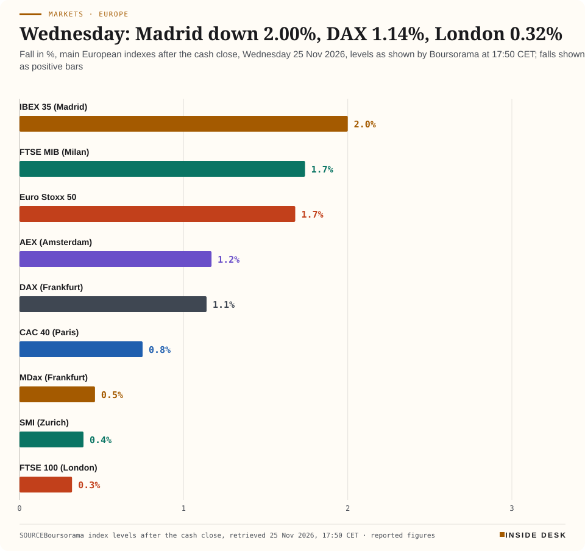

Inside Desk ePaper, Evening ePaper · Wed 25 Nov 2026
Wednesday, 25 November 2026Always free
Inside Desk
Evening ePaperPublished 18:30 CET · Berlin
Lead · Energy & Industry
German power for Thursday costs the most since 11 November, and Brent rose on a refinery claim. One price is about weather and wiring, the other about fear. Only one of them comes with a meter.
Also: the DAX below 25,000, Washington's tariff caps for 14 economies, a Podium vs Print on the budget, America's 4.3% and 3.8%, and a Thanksgiving ledger.
Energy · PowerThursday €291.77 a MWh, up from Wednesday's €246.29Germany/Luxembourg day-ahead price, daily average by delivery day, € per MWh, 1 Sep to Thu 26 Nov 2026. Thursday's quarter-hours run from €195.81 (03:45) to €388.02 (17:45)


Line chart of the daily average German-Luxembourg day-ahead electricity price from 1 September to 26 November 2026, in euros per megawatt hour. Prices mostly ran between about €100 and €210 in September and October, climbed above €250 from late October, peaked at €351.48 on Tuesday 10 November, fell to €139.70 on Sunday 15 November, were €240.42 on Monday 23 and €254.15 on Tuesday 24 November, were €246.29 on Wednesday 25 November, and stand at €291.77 for the latest delivery day, Thursday 26 November, the highest daily average since 11 November.
Source: Bundesnetzagentur | SMARD.de day-ahead DE-LU daily averages of quarter-hourly prices, 1 Sep to 19 Nov and 22 Nov 2026 retrieved 22 Nov 2026; 20, 21 Nov retrieved 23 Nov; 23 to 25 Nov via Fraunhofer ISE Energy-Charts (data: Bundesnetzagentur | SMARD.de), retrieved 24 Nov 2026, 17:26 CET; 26 Nov retrieved 25 Nov 2026, 17:31 CET · CC BY 4.0 · CSV
Geo-economics · p. 5
Markets & Macro · p. 6
Climate & Weather · p. 15
The day in one sentenceGerman power got dearer because it is cold, oil got dearer because of a claim, and only the cold is certain.
ContentsInside Desk · Evening ePaper25 November 2026
Also: the DAX below 25,000, Washington's tariff caps for 14 economies, a Podium vs Print on the budget, America's 4.3% and 3.8%, and a Thanksgiving ledger.
11 edition pieces · 11 desks · Published 18:30 CET, 25 November 2026
22 ePaper extras, added , 25 November. They appear only in the ePaper and carry their own time.
18:30 Evening ePaper, updated live until 22:30 with an “Updated” time and a Latest page
Sun 10:00 The Sunday Magazine
Berlin time. Every issue is free.
How to read it
Swipe, use the arrow keys or the page strip. Tap any headline for the reading view. Press / to search, t for contents, +/− to zoom. Download the PDF.
LatestInside Desk · Evening ePaper25 November 2026
Latest
Live: this page and the issue are updated until 22:30 Berlin time.
Evening ePaper published. No updates yet.
LeadInside Desk · Evening ePaper25 November 2026
Energy & Industry · Lead · 3 min
German power for Thursday costs the most since 11 November, and Brent rose on a refinery claim. One price is about weather and wiring, the other about fear. Only one of them comes with a meter.
Thursday’s electricity in the German-Luxembourg day-ahead auction averages €291.77 a megawatt hour, up from €246.29 for Wednesday1. Desk arithmetic: that is 18.5% more in a day, and the highest daily average since Wednesday 11 November. The cheapest quarter-hour is €195.81 at 03:45; the dearest is €388.02 at 17:45, when offices, kitchens and street lights all want power at once and the sun has long gone1.
Energy · PowerThursday €291.77 a MWh, up from Wednesday's €246.29Germany/Luxembourg day-ahead price, daily average by delivery day, € per MWh, 1 Sep to Thu 26 Nov 2026. Thursday's quarter-hours run from €195.81 (03:45) to €388.02 (17:45)
Line chart of the daily average German-Luxembourg day-ahead electricity price from 1 September to 26 November 2026, in euros per megawatt hour. Prices mostly ran between about €100 and €210 in September and October, climbed above €250 from late October, peaked at €351.48 on Tuesday 10 November, fell to €139.70 on Sunday 15 November, were €240.42 on Monday 23 and €254.15 on Tuesday 24 November, were €246.29 on Wednesday 25 November, and stand at €291.77 for the latest delivery day, Thursday 26 November, the highest daily average since 11 November.
Source: Bundesnetzagentur | SMARD.de day-ahead DE-LU daily averages of quarter-hourly prices, 1 Sep to 19 Nov and 22 Nov 2026 retrieved 22 Nov 2026; 20, 21 Nov retrieved 23 Nov; 23 to 25 Nov via Fraunhofer ISE Energy-Charts (data: Bundesnetzagentur | SMARD.de), retrieved 24 Nov 2026, 17:26 CET; 26 Nov retrieved 25 Nov 2026, 17:31 CET · CC BY 4.0 · CSV
Nothing dramatic happened to the grid. It is simply the last week of November behaving like the last week of November. The weather service expects snow in south-east Bavaria on Thursday, 5 to 10 centimetres and locally up to 15 in 12 to 18 hours, with possible freezing drizzle in the south and east, and a raised risk of glaze in the north-west on Sunday night5. Cold, still, grey days ask more of gas plants and less of wind and solar, and the auction prices that honestly. The evening peak is the expensive part. The night is not.
The second price tag of the day came from the Gulf. Yemen’s Houthis said on Wednesday that they had attacked Saudi Arabia’s Ras Tanura refinery, the kingdom’s largest, and that fires had broken out2,4. The Saudi-led coalition said its air defences destroyed four drones over Ras Tanura and that fragments fell, with no injuries in a first assessment; it did not say the refinery had been hit2,4. NASA satellite imagery reviewed by Reuters showed thick black smoke covering about 600 square kilometres around the site2. Aramco and the Saudi government did not comment2.
The refinery processes 550,000 barrels a day, about 16% of Saudi refining capacity, and the terminal next to it can load about 6.5 million barrels a day of crude, mostly for Asian buyers2,4. It has been hit before this year: Aramco shut the refinery after an Iranian drone attack on 2 March, and loadings at the terminal resumed only in late June4.
Brent responded the way markets respond to smoke. It traded at $93.60 a barrel at 16:16 Berlin time, up $2.20 or 2.41%, with WTI at $83.512. Reuters had Brent at $93.06 half an hour earlier, up 1.82%3. An analyst at PVM called it a rising geopolitical risk premium and added that traders covering short positions before the American Thanksgiving holiday could add to the move3.
Look at what sat underneath the headline, though. The American Petroleum Institute counted US crude stocks up by 126,000 barrels in the week to 20 November, against an average analyst estimate of a 1.5 million barrel rise3. …
Geo-economicsInside Desk · Evening ePaper25 November 2026
Geo-economics · 2 min
The US trade office proposed new tariff caps for 14 economies under a 1974 statute. They are proposals, they come with exemptions, and nothing changes before a hearing on 25 January.
The US Trade Representative, Jamieson Greer, determined on Wednesday that the policies of 14 economies relating to ‘structural excess capacity’ in manufacturing are unreasonable and burden American commerce, and proposed tariffs on each of them under Section 301 of the Trade Act of 19741. Mexico and Norway, investigated since March, got no determination for now1.
Geoeconomics · TariffsProposed caps: Vietnam 35%, India 25%, China 20%, EU 15%Maximum additional US tariff proposed by USTR on 25 Nov 2026 under Section 301 (excess capacity), %, upper bound per economy; proposals only, hearing 25 Jan 2027


Bar chart of the maximum additional US tariffs proposed on 25 November 2026 under Section 301 for 14 economies: Vietnam up to 35 percent, India up to 25 percent, China and Singapore up to 20 percent, Bangladesh, Cambodia, Indonesia, Malaysia and Thailand up to 18 percent, and the European Union, Japan, Korea, Switzerland and Taiwan up to 15 percent. These are proposals open for comment, with exemptions, netted against some existing duties; none is in force.
Source: Office of the US Trade Representative, press release of 25 Nov 2026 · reported figures · CSV
The proposed caps run from 15% for the European Union, Japan, Korea, Switzerland and Taiwan, through 18% for Bangladesh, Cambodia, Indonesia, Malaysia and Thailand, and 20% for China and Singapore, to 25% for India and 35% for Vietnam1. All are upper bounds, netted against some existing duties and with exemptions in annexes1. Greer told CNBC the rates are ‘not really additive’: ‘In effect, it’ll look more like a top up’2. China is the exception; a US official said its 20% would come on top of first-term tariffs of roughly 25%, taking the rate to about 45%2.
Read the timetable before the headline. Comments are due by 5 January, hearings begin on 25 January, and Greer said none of it would take effect ‘earlier than a couple months from now’1,2. China’s foreign ministry said the ‘overcapacity’ ‘does not really exist’2. …
Geo-economics · Short item · ePaper extra, added
Washington wrote a conditional into its tariff proposal. Beijing says the problem does not exist.
Under the overcapacity proposal, China faces the highest capped rate of the 14 economies at 20%, on top of duties of roughly 25% from Donald Trump’s first term1. That rate complies with the US-China truce that expires on 10 January; if the truce unravels, China’s rate would rise to 40%, the trade office said, according to Reuters1. …
Geo-economics · Brief · ePaper extra, added
The World Food Programme warns that the war in Ukraine is disrupting grain shipments and putting food aid for 7.3 million people at risk1. ‘Grain is available, but it is not reaching the people who need it’, said Luke Lindberg of the WFP; silos in Ukraine and Poland are full, while families in Somalia, Sudan and South Sudan go hungry1. Yemen, he said, imports 90% of its food1. Odesa, Ukraine’s grain gateway, was hit again overnight. The shortage is in shipping and safe passage, not in the fields.
Markets & MacroInside Desk · Evening ePaper25 November 2026
Markets & Macro · 2 min
Frankfurt opened higher, then met a tariff announcement, a tech sell-off in New York and German GDP revised down. The carmakers were the exception.
Shortly after the close of Xetra trading, Boursorama showed the DAX at 24,733.22 points at 17:50, down 1.14% on the day and back below 25,0001. It had opened higher; at 10:26 Reuters had it up 0.3% at 25,084, with a Consorsbank analyst saying the fight for 25,000 was ‘noch nicht ausgefochten’, not yet over3. The MDax was down 0.46% at 28,659.531.
Markets · EuropeWednesday: Madrid down 2.00%, DAX 1.14%, London 0.32%Fall in %, main European indexes after the cash close, Wednesday 25 Nov 2026, levels as shown by Boursorama at 17:50 CET; falls shown as positive bars


Bar chart of the size of the falls on the main European stock indexes after the cash close on Wednesday 25 November 2026, drawn as positive bars: IBEX 35 (Madrid) down 2.00 percent to 18,635.80, FTSE MIB (Milan) down 1.74 percent to 47,282.29, Euro Stoxx 50 down 1.68 percent to 5,902.64, AEX (Amsterdam) down 1.17 percent to 1,064.82, DAX (Frankfurt) down 1.14 percent to 24,733.22, CAC 40 (Paris) down 0.75 percent to 7,980.57, MDax (Frankfurt) down 0.46 percent to 28,659.53, SMI (Zurich) down 0.39 percent to 14,675.89, FTSE 100 (London) down 0.32 percent to 10,433.66. These are index levels as shown by Boursorama at 17:50 CET, shortly after the close of the main cash markets.
Source: Boursorama index levels after the cash close, retrieved 25 Nov 2026, 17:50 CET · reported figures · CSV
Three things weighed through the day. Washington announced proposed tariffs on 14 economies, including the EU, which a Frankfurt analyst called badly timed for export-oriented firms2. Statisticians revised German growth for the third quarter down to 0.1%2. And the selling in American technology shares spread across markets again2; at 17:50 Berlin time Boursorama showed the S&P 500 down 2.86% and the Nasdaq Composite down 3.88%1. Carmakers decoupled from the fall, helped by a positive 2027 sector outlook from a large US investment bank2.
Across Europe the picture was the same in different sizes: Madrid down 2.00%, the Euro Stoxx 50 down 1.68%, Milan down 1.74%, Paris down 0.75% and London only 0.32%1. A fall of about one per cent on a day of tariff headlines is not a crash. It is a market doing its arithmetic in public.
This is reporting, not investment advice.
Markets & Macro · Short item · ePaper extra, added
Enthusiasm over Jensen Huang's return to Nvidia faded further, and the day's inflation data did not help.
Wall Street fell on Wednesday under the weight of AI stocks, as the enthusiasm over the return of Jensen Huang to Nvidia faded further, AP reported; its headline at 17:12 Berlin time had the S&P 500 down 2.7%1. Worries about high inflation dragging on the economy added to the selling1.
The day’s data gave both sides something. …
Markets & Macro · Brief · ePaper extra, added
Aroundtown rose more than 2% on Wednesday morning after it raised the lower end of its forecast range for 2026 funds from operations (FFO I), Reuters reported; the company has also increased its stake in the housing group LEG Immobilien and expects a book gain in the billions from it1. Carmakers also held up against the falling market, helped by a positive sector outlook from a large American investment bank2. Rents are paid monthly, whatever the Nasdaq does. That is the whole appeal of the dull end of a share index.
This is reporting, not investment advice.
Politics & InstitutionsInside Desk · Evening ePaper25 November 2026
Politics & Institutions · Podium vs Print · 2 min
The chancellor admitted the budget process had been ugly. The budget itself is judged by a less forgiving document: the line that says how much is borrowed.
Podium
“Der Prozess zur Aufstellung dieses Haushalts hat sicher keinen Schönheitspreis verdient.”
Friedrich Merz, chancellor (CDU), Bundestag, general debate on the 2027 budget, Wednesday 25 November 2026
Print€210bn new debt
Dabei sind etwa 210 Milliarden Euro neue Schulden eingeplant.
Federal budget 2027, as summarised by Deutschlandfunk, 25 November 2026
The podium. Friedrich Merz opened his reply in the general debate on Wednesday unusually quietly. ‘Der Prozess zur Aufstellung dieses Haushalts hat sicher keinen Schönheitspreis verdient’, he said: the process of drawing up this budget certainly deserved no beauty prize1. He called the budget ‘vertretbar’, defensible, rejected the charge of a ‘sozialer Kahlschlag’, and warned that without a change of course every euro of federal revenue would soon go on welfare, interest and defence1,2.
The print. The 2027 budget plans total spending of €560 billion and about €210 billion of new debt2. ZDF notes that Merz rejected new borrowing before the election and now answers for a budget that borrows around €210 billion in one year; he justified it with defence and infrastructure, ‘leider über neue Schulden’, unfortunately through new debt1. Desk arithmetic: €210 billion is about 37.5% of €560 billion, though part of the borrowing finances special funds outside the core budget.
The gap. The speech asked for goodwill; the opposition replied with words. The Left’s Heidi Reichinnek spoke of social cuts and unlimited rearmament, the Greens’ Britta Haßelmann called the budget unserious, and Tino Chrupalla spoke of an ‘Ausgabensucht’, an addiction to spending2. None of that changes the figure. What can is Friday’s vote and the year that follows it.
Politics & Institutions · Short item · ePaper extra, added
The opposition answered the chancellor with three words. The AfD added a court threat.
The general debate is the budget week’s big stage, and the opposition used it for labels. …
Carles Puigdemont, the former Catalan leader, said on Wednesday he would return to Spain on 12 December, after this weekend’s national election, ending nearly a decade of self-imposed exile in Belgium1. Spain’s Supreme Court applied the amnesty law earlier this week and shelved the criminal case against him; he plans to present a renewed independence proposal on 17 December1. Spaniards vote on Sunday in a snap election triggered by protests over the cost of living2. An amnesty is a law, not a reconciliation. Elections decide what follows.
Psychology & BehaviourInside Desk · Evening ePaper25 November 2026
Psychology & Behaviour · 2 min
Germany's depression barometer finds the old, unglamorous self-help still beats the apps, and that many use it to bridge the wait for a therapist.
87% of people with depression use self-help measures to get through a depressive episode, according to the 2026 Deutschland-Barometer Depression of the Stiftung Deutsche Depressionshilfe, a representative survey of 5,323 adults aged 18 to 69 taken in September1. The leading measures are deliberately structuring the day (54%), becoming an expert on one’s own illness (49%), a healthy lifestyle (49%), relaxation techniques (45%) and sport (41%)1.
The reasons are telling. Most use self-help to contribute something to their own recovery (58%); one in three uses it to bridge the wait for a treatment place1. The classic measures are used more often and rated more helpful than digital offers1. More than a third (38%) now talk to an AI about mental health problems, well ahead of prescribed apps (13%)1.
The foundation’s chair, Ulrich Hegerl, is careful: self-help can ‘keinesfalls ersetzen’, in no way replace, drug or psychotherapeutic treatment, but there is good evidence for sport, relaxation techniques and prescribed apps1. The headline here is not the chatbot. It is that people already do the sensible things, and wait too long for the rest. If you need to talk to someone, the foundation’s Info-Telefon Depression is on 0800 33 44 5 331.
Psychology & Behaviour · Short item · ePaper extra, added
An Australian survey finds that money ends therapy more often than doubt does.
52.2% of Australians with experience of mental health treatment have stopped or delayed it at some point because of barriers to care, with cost the most common reason, according to the Consumers Health Forum’s 2026 National Consumer Sentiment Survey, published by the Australian Association of Psychologists on Wednesday1. Among people under financial stress 71.4% reported an interruption or delay, against 33.9% of those without1.
Only 27% were very or extremely confident they could get mental health support quickly if they needed it1. Among adults aged 18 to 34, 37.5% report a current mental health condition, up from 31.4% in 20251.
‘Getting a referral or making it to a first appointment is a big step’, said the association’s executive director, Tegan Carrison; people then need to afford the next one1. The association wants a single, higher Medicare rebate and up to 20 subsidised sessions a year1. It is a lobby’s request, but the survey’s point stands on its own: the first session is the easy part to fund.
Men with depression use AI for mental health problems more often than women (41% against 35%), according to the 2026 Deutschland-Barometer Depression1. 45% of men think the AI helpful enough to do without professional treatment, against 26% of women, and men report twice as often that they felt worse afterwards (16% against 8%)1. 40% of all users have come across false information1. Foundation chair Ulrich Hegerl says there are no good studies proving such models safe or effective for depression; the right places remain psychiatrists, psychotherapists and family doctors1. In Germany the Info-Telefon Depression is 0800 33 44 5 331.
Energy & IndustryInside Desk · Evening ePaper25 November 2026
Energy & Industry · Short item · ePaper extra, added
Overnight strikes hit both halves of Ukraine's heating system: electricity and the gas that feeds it.
Russian strikes overnight halted power generation at a DTEK thermal plant and badly damaged its equipment, the company said, without saying where the plant is1. The same attack caused a large fire at a Naftogaz gas production site in the Poltava region of central Ukraine and stopped operations there1. Electricity was cut in five regions1.
The two targets belong together. Ukraine has spent three winters learning to run a grid with holes in it, and domestic gas production is what keeps its own heating plants and boilers going without imports. Each lost unit has to be replaced by power bought across the border or by gas bought on the market, at exactly the moment Europe’s prices are rising with the cold (see the lead).
In Odesa, engineers inspected a damaged substation that officials described as part of an attempt to cut the port city off from the rest of the country1. The defence is unglamorous: spare transformers, mobile generators and repair crews who work at night.
Energy & Industry · Brief · ePaper extra, added
US crude stocks rose by 126,000 barrels in the week to 20 November, according to American Petroleum Institute figures cited by Reuters; eight analysts had expected a rise of about 1.5 million1. In another week, a smaller-than-expected build would be a story. On Wednesday Brent rose to $93.60 a barrel at 16:16 Berlin time on the Houthi claim against Ras Tanura instead2. The official government count usually follows the API figures. Inventories are the dullest number in oil, and the one that decides whether fear lasts longer than an afternoon.
Money, FX & CommitteesInside Desk · Evening ePaper25 November 2026
Money, FX & Committees · 2 min
The US economy grew faster than first thought in the summer, and October's prices rose faster than the Fed wants. Both came out at 14:30 Berlin time.
Real GDP in the United States grew at an annual rate of 4.3% in the third quarter, the Bureau of Economic Analysis said on Wednesday, revised up 0.9 percentage points from the advance estimate of 3.4%1. The revision came mainly from investment, led by intellectual property products, notably software, and from consumer spending1. Real final sales to private domestic purchasers grew 5.8%1.
At the same release time, October’s personal income data showed the PCE price index up 0.3% on the month and 3.8% on a year earlier; excluding food and energy it was up 3.3%2. Personal income rose 0.7% and disposable income 0.8%, partly on one-off Medicare premium rebates, while real consumer spending was flat2. The saving rate was 4.1%2.
The market reading was not kind. The market analyst Andreas Lipkow wrote that the figures painted a robust economy with persistent inflation pressure, and that the growth gave the Fed further arguments for raising rates3. That is one reading, not a forecast. The quieter point is in the revision: an economy whose statisticians find 0.9 points of extra growth, much of it software, is one where the AI spending argued about on trading screens is already showing up in the accounts1.
Money, FX & Committees · Short item · ePaper extra, added
Exports and September's shops did worse than first thought. Equipment investment fell 3.5%.
Germany’s economy grew 0.1% in the third quarter, price, seasonally and calendar adjusted, the statistics office said on Wednesday, 0.1 points less than in its flash estimate of 30 October; exports and September retail sales were weaker than first assumed1. ‘Flachte die wirtschaftliche Entwicklung im 3. Quartal 2026 ab’, said Destatis president Ruth Brand: growth flattened1.
Inside the total, private consumption rose 0.1% and government consumption 0.3%1. Gross fixed investment fell 1.2%, and investment in equipment, mainly machinery and vehicles, fell 3.5%1. Exports fell 1.0% and imports 1.4%1. Manufacturing value added fell 0.3%, partly because low water on the rivers limited barge transport for refineries and chemicals; information and communication grew 1.5%1.
Compared with a year earlier, output was 1.2% higher1. A downward revision of 0.1 points is not a recession. A 3.5% fall in machinery spending is the number to watch, because that is what tomorrow’s production is built with.
Money, FX & Committees · Brief · ePaper extra, added
US personal income rose 0.7% in October and disposable income 0.8%, the Bureau of Economic Analysis said; part of the rise came from one-time Medicare Improvement Fund premium rebates1. Nominal consumer spending rose 0.3%, but after prices real spending was flat, falling $5.8 billion1. Real disposable income rose 0.5% after a 0.2% fall in September, and the saving rate was 4.1%1. A household that receives a rebate and saves it is behaving sensibly. It also tells you not to count October’s income as a trend.
Ordinary & Inherited LifeInside Desk · Evening ePaper25 November 2026
Ordinary & Inherited Life · 2 min
America's Thanksgiving getaway is a little smaller this year, and the reason is on the price board at the petrol station.
AAA expects 81.5 million Americans to travel at least 50 miles from home between Tuesday 24 and Monday 30 November, 0.1% fewer than last year’s 81.6 million and the end of a three-year run of records1. Driving falls by 200,000 people to 72.9 million, which AAA puts down partly to this season’s record petrol prices; August, September and October all set monthly records at the pump1.
The ledger for Wednesday: the national average for a gallon of regular is $3.58662. The highest Thanksgiving Day average so far was $3.58, in 20221,2. On 19 November it was $3.72; a month before that $4.30, and a year before $3.092. Desk arithmetic: Wednesday’s price is about 71 cents below mid-October’s and still about 49 cents above last November’s.
The air is where the bill moved most. Round-trip domestic flights booked for the holiday average $800, 17% more than last year, while flyers fall 0.2% to 5.96 million1. Buses, trains and cruises are the only mode growing, up 4.1% to 2.6 million1. People did not stop going home. They changed how they get there, which is what prices are for.
Ordinary & Inherited Life · Short item · ePaper extra, added
America's holiday fares rose 17%. Some travellers took the coach.
Round-trip domestic flights booked for Thanksgiving cost $800 on average, 17% more than last year, according to AAA’s booking data1. AAA expects 5.96 million people to fly over the holiday period, 0.2% fewer than in 20251.
The only growing mode is the slow one. AAA projects 2.6 million Americans will take buses, trains and cruises, 4.1% more than last year1. Nearly 90% of holiday travellers still go by road, and last Thanksgiving AAA answered more than half a million breakdown calls for flat tyres, dead batteries, fuel and lockouts1. Hertz expects Tuesday and Wednesday to be its busiest pick-up days, with Orlando, Phoenix, Las Vegas, Atlanta and Denver in highest demand1.
Desk arithmetic: a family of four flying round trip at the average fare pays about $3,200, roughly $465 more than a year ago. That is the kind of figure that turns a flight into a nine-hour drive.
Ordinary & Inherited Life · Brief · ePaper extra, added
The national average for a kilowatt hour at a public EV charging station in the US stayed at 42 cents in AAA’s latest weekly report, while a gallon of regular fell 18 cents in a week to $3.721. Hawaii is the dearest state for public charging at 55 cents, Kansas the cheapest at 321. By Wednesday regular stood at $3.58661. Pump prices follow crude within days; charging prices follow electricity contracts and station costs, which move slowly in both directions. Slow prices are dull. Dull is easier to budget.
Tech & ComputeInside Desk · Evening ePaper25 November 2026
Tech & Compute · 2 min
Twelve weeks of trial ended with guilty verdicts on fraud, sanctions and trade-secret conspiracy. The most serious charge did not stick.
A federal jury in Brooklyn found Huawei and three subsidiaries guilty on 10 of 12 counts on Tuesday, including bank and wire fraud, sanctions violations and conspiracies to steal trade secrets and launder money, the Justice Department said1. The jury acquitted the company of racketeering conspiracy, the most serious charge, and of conspiring to obstruct justice1.
Over the 12-week trial, prosecutors said Huawei had run its Iran business through Skycom, a subsidiary it presented to banks as independent, and used false statements to obtain credit, loans and access to US dollar clearing1. The case began in 2018 with the detention in Canada of the finance chief, Meng Wanzhou; she was released in 2021 under a deferred prosecution agreement1.
The verdict lands in a week when chips and China dominate Washington’s technology debate. The attorney general, Todd Blanche, said on Wednesday that Nvidia was ‘a good corporate citizen’ and signalled no investigation of Jensen Huang2. One file closed in court, another declared closed at a press gaggle: you can judge which process carries more weight.
Tech & Compute · Short item · ePaper extra, added
The statisticians found 0.9 points of extra growth. Much of it was intellectual property.
When the Bureau of Economic Analysis revised third-quarter US growth from 3.4% to 4.3% annualised on Wednesday, the biggest single reason was investment1. The revision to investment was led by intellectual property products, notably software, based mainly on revised producer prices for system and application software publishing1.
Consumer spending was revised up too: within goods, mainly pharmaceuticals, computer software and accessories, and petrol and other energy goods1. Health care services were revised down after new survey data1. Real gross domestic income rose 4.4%, close to the output measure1.
Markets spent Wednesday selling AI shares. The national accounts, meanwhile, recorded the spending that those shares are supposed to be worth. Both can be right: an investment can raise growth this year and still disappoint its owners later. The accounts measure what was bought, not whether it pays.
Tech & Compute · Brief · ePaper extra, added
Attorney General Todd Blanche signalled on Wednesday that he would not investigate Nvidia co-founder Jensen Huang; asked whether he had, he replied ‘For what?’ and called Nvidia ‘a good corporate citizen’1. Donald Trump told the New York Post on Tuesday he would be willing to pardon Huang but did not think it necessary1. The consumer group Public Citizen has asked for an inquiry into suspiciously timed prediction-market bets on Huang’s reinstatement, including one account that made $128,0001. Lawmakers of both parties are less relaxed. Courts and committees are slower than press gaggles, and they usually last longer.
Health & CareInside Desk · Evening ePaper25 November 2026
Health & Care · 2 min
Family doctors complain of late and short deliveries, especially for the over-60s. The regulator and pharmacists say there is enough. Both can be true.
Germany has no shortage of flu vaccine, according to the health ministry, the Paul-Ehrlich-Institut and the pharmacists’ federation ABDA. As of 8 November about 20.2 million doses were available, and the number of tested and released doses passed last year’s total on 18 October and is now about 1.7 million higher than in 20251. ‘Ein bundesweiter Engpass … ist derzeit nicht feststellbar’, a ministry spokeswoman said: no nationwide shortage can be found1.
The family doctors see it differently from the surgery. Nicola Buhlinger-Göpfarth, who chairs the Hausärztinnen- und Hausärzteverband, said vaccine had partly arrived ‘viel zu spät’ and not in the quantities ordered, with the biggest problems for the products for people over 60; practices phone round pharmacies and move appointments1. ABDA concedes single practices or pharmacies may run out for a while, and that some deliveries, including the over-60s vaccine, moved much more slowly than in earlier years1.
Karl Lauterbach, now chairman of the Bundestag research committee, blamed the late development of the adapted vaccines, not politics, and said there was still time because the season only really starts around Christmas1. The useful part is plain: a vaccine that arrives in December still works in January.
Health & Care · Short item · ePaper extra, added
The Army chose a mitigated detonation over the risk of an uncontrolled one. Neighbours were told to leave or stay inside.
The US Army carried out a controlled, mitigated detonation at the Iowa Army Ammunition Plant in Middletown on Wednesday ‘to eliminate the risk of an uncontrolled explosion’1. Two blasts were heard shortly after 09:00 local time, 16:00 in Berlin, and officials said the mitigation had exceeded expectations, the BBC reported, citing CBS News4. The stockpile was nearly 5 tons of degraded, highly unstable lead azide in 68 deteriorating plastic barrels3.
Iowa’s governor declared a disaster emergency in three counties. Residents of Middletown and anyone within a five-mile cone south-west of the plant were advised to evacuate, and people up to 20 miles away to stay indoors with windows closed2. A federal health official said pregnant women, young children and people with chronic illness in the affected area should leave2. The Army’s updated map estimated the plume could reach northern Missouri, more than 100 miles away2.
There is no safe level of lead exposure2. The New York Times reported that the Army had first hired a firm to neutralise the explosives, then dropped the contract2. A good first report is not the last word. What matters now is the dull work after the bang: soil, water and dust samples, published in full.
Health & Care · Brief · ePaper extra, added
Gaza’s health ministry declared an epidemic alert on Tuesday over a surge in meningitis, warning that hundreds of thousands of people are at risk1. Overcrowded shelters, damaged water systems and a health service working with little are the conditions in which such infections spread. Israeli strikes continued on Wednesday, including one that killed a senior Hamas security official with his wife and two children, according to Gaza’s interior ministry and medics2. Vaccination, clean water and functioning clinics are the remedy; all three need access more than speeches.
Security & OrderInside Desk · Evening ePaper25 November 2026
Security & Order · 2 min
Russia hit Ukraine's grid and gas production overnight; Ukraine's drones hit the Volga's refinery towns. Both sides are now at war with each other's boilers.
A Russian attack on Ukraine’s power sector overnight damaged energy and gas infrastructure and cut electricity in five regions, Ukrainian officials said on Wednesday1. Strikes halted generation at a DTEK thermal plant and badly damaged its equipment, and caused a large fire at a Naftogaz gas production site in the Poltava region, stopping operations there1. In Odesa, home to nearly a million people, engineers are working to keep the lights on after attacks on substations1.
The traffic runs both ways. Industrial sites in Syzran, in Russia’s Samara region, came under Ukrainian drone attack overnight and one person was killed in the regional capital, local authorities said; Syzran and Samara host three major refineries1. At least 14 Russian refineries have been struck since the start of November, despite Donald Trump’s request to Kyiv to stop, and Vladimir Putin has vowed retaliation2.
In Berlin, the chancellor spoke the same morning of a Russia that ‘eskaliert’, escalates, in the Baltic, in Poland, on the Black Sea and in Germany3. The more useful German contribution is less quotable: transformers, generators and spare parts, delivered before the cold, not after.
Security & Order · Short item · ePaper extra, added
Iran's Revolutionary Guards say ships using an 'unauthorized route' hit mines. Nobody has confirmed it.
The navy of Iran’s Revolutionary Guards said in a statement carried by state media that two oil tankers attempting to pass through what it called an unauthorised route in the Strait of Hormuz struck naval mines, causing explosions and fires in their engine rooms1. It said the ships had tried to cross undetected, near the southern and eastern shores of the strait, and warned crews sailing with navigation systems switched off not to trust ‘the lies of American officials’1. The claim could not be independently verified1. The tankers were not named.
The statement fits a pattern of pressure on shipping since the war began in February, and it came the same day as the Houthi attack claim against Saudi Arabia’s Ras Tanura2. Two unverified claims do not make one verified fact. Insurers, which set war-risk premiums by voyage, will wait for ship names and port reports, and so should you.
Security & Order · Brief · ePaper extra, added
Italy has told Ukraine it was wrong to attack Russian ships in Libyan waters and warned Kyiv not to spread the war to new areas, Foreign Minister Antonio Tajani told Corriere della Sera1. ‘It was a mistake to violate Libya’s sovereignty’, Tajani said, adding that Rome had received no advance warning1. A Ukrainian drone struck a Russian ship at Benghazi, killing two Libyan naval officers, and the Libyan National Army has vowed to retaliate2. Allies can agree on the war and still disagree on its map. Saying so in public is how alliances keep working.
Climate & WeatherInside Desk · Evening ePaper25 November 2026
Climate & Weather · 2 min
The weather service's hazard week reads like a winter timetable: snow on Thursday, nothing notable on Friday and Saturday, freezing rain possible in the north-west on Sunday night.
The Deutscher Wetterdienst’s weekly hazard outlook, issued at 11:00 on Wednesday, expects snow in south-eastern Bavaria on Thursday: 5 to 10 centimetres, locally up to 15, in 12 to 18 hours1. Light drizzle with glaze cannot be ruled out locally in the south and east1. Friday and Saturday bring no notable weather1.
The next risk comes from the other end of the country. On Sunday evening and into the night to Monday the north-west and north face an increased risk of slippery roads; freezing rain with glaze is possible on some stretches but rated of low probability, and may linger on Monday morning in the north1. Tuesday is expected to be quiet1.
It is a reminder that winter hazards are not only about amounts. Five centimetres of snow in Passau is routine; a millimetre of freezing rain in Bremen, on a Monday morning commute, is not. The same cold week sits behind Thursday’s power auction, which averages €291.77 a megawatt hour (see the lead). The forecast is the cheapest piece of infrastructure the country owns. It is worth reading before Sunday.
Climate & Weather · Short item · ePaper extra, added
Leo XIV used his weekly audience to criticise the climate talks' outcome.
Pope Leo sharply criticised the failure of the UN climate talks over the weekend, calling the outcome ‘troubling’ and urging world leaders to step up efforts against climate change1. ‘In the face of the growing frequency of extreme environmental events linked to the climate crisis, it is troubling that COP31 ended without the international community adopting clear commitments’, he told pilgrims in St. Peter’s Square on Wednesday1.
A pope’s words do not bind a government. But they are aimed at the right place: the gap between what was agreed and what is needed is filled, or not, by national budgets, building codes and insurance rules, not by summit communiqués. The next practical tests come in each country’s budget, including the one Germany’s Bundestag votes on this Friday.
Talks that fail still leave the dull machinery in place: national adaptation plans, weather services and flood defences that work whether or not a final text was agreed.
Climate & Weather · Brief · ePaper extra, added
NASA satellite imagery reviewed by Reuters showed thick black smoke around Saudi Arabia’s Ras Tanura refinery on Wednesday, covering about 600 square kilometres1. Desk arithmetic: that is roughly two-thirds of the area of Berlin. Saudi Arabia said four drones were destroyed and fragments fell, without saying the refinery was hit; the Houthis claimed fires1. Burning oil releases soot, sulphur dioxide and fine particles that drift with the wind over the Gulf coast. Open satellite data now lets anyone check a fire’s size within hours, which is the quiet good news inside the bad.
Charts and dataInside Desk · Evening ePaper25 November 2026
Charts and data
Energy · PowerThursday €291.77 a MWh, up from Wednesday's €246.29Germany/Luxembourg day-ahead price, daily average by delivery day, € per MWh, 1 Sep to Thu 26 Nov 2026. Thursday's quarter-hours run from €195.81 (03:45) to €388.02 (17:45)
Line chart of the daily average German-Luxembourg day-ahead electricity price from 1 September to 26 November 2026, in euros per megawatt hour. Prices mostly ran between about €100 and €210 in September and October, climbed above €250 from late October, peaked at €351.48 on Tuesday 10 November, fell to €139.70 on Sunday 15 November, were €240.42 on Monday 23 and €254.15 on Tuesday 24 November, were €246.29 on Wednesday 25 November, and stand at €291.77 for the latest delivery day, Thursday 26 November, the highest daily average since 11 November.
Source: Bundesnetzagentur | SMARD.de day-ahead DE-LU daily averages of quarter-hourly prices, 1 Sep to 19 Nov and 22 Nov 2026 retrieved 22 Nov 2026; 20, 21 Nov retrieved 23 Nov; 23 to 25 Nov via Fraunhofer ISE Energy-Charts (data: Bundesnetzagentur | SMARD.de), retrieved 24 Nov 2026, 17:26 CET; 26 Nov retrieved 25 Nov 2026, 17:31 CET · CC BY 4.0 · CSV
Latest values
Series
Value
Date
Chart
Day-ahead DE-LU
291.77
26 Nov 2026
Thursday €291.77 a MWh, up from Wednesday's €246.29
Last data point of each series in the charts above, from the Inside Desk data archive. Sources under each chart.
Back pageInside Desk · Evening ePaper25 November 2026
Before you close the tab
The day in one sentence
German power got dearer because it is cold, oil got dearer because of a claim, and only the cold is certain.
One thing you can do this week
This week, write tomorrow's three most important tasks on paper before you finish today, and leave the list where you will see it first. Germany's depression barometer finds that deliberately structuring the day is the self-help measure people with depression use most, and that such classic measures are rated more helpful than digital ones 1. It costs two minutes and needs no app.
A habit, not advice.
What went right
American households got a real raise in October. Real disposable income rose 0.5% after a 0.2% fall in September, and the saving rate was 4.1%, according to the Bureau of Economic Analysis 2. Part of it came from one-off Medicare premium rebates, so it will not repeat every month. But people who received extra money mostly kept it, which is the sensible thing to do with a windfall.
In euros at home
Thursday's wholesale electricity averages €291.77 a megawatt hour, about 29.2 cents a kilowatt hour before grid fees, taxes and margins, against €246.29 for Wednesday 3. Desk arithmetic: a household on a dynamic tariff that uses 8 kWh on Thursday pays about €2.33 for the energy part at the day's average, against about €1.97 at Wednesday's. Moving a 1 kWh dishwasher run from 17:45 (€388.02 per MWh) to 03:45 (€195.81) saves about 19 cents 3. On a fixed tariff none of this changes your bill this week.
Desk arithmetic on the cited figures.
Small words
Risk premium
The extra amount a price carries because something might go wrong, not because it has. On Wednesday an oil analyst used the phrase for Brent's rise after the Houthi claim against Ras Tanura 4. A risk premium can vanish as fast as it appears, once the facts arrive.
Commentary for information only. Not investment, legal, tax, medical or political advice. Inside Desk is free and reader-supported. Every number is sourced in the piece it appears in.
This issue has been updated.
All articles in this edition
Energy & Industry · 3 min read
€291.77 for Thursday, smoke over Ras Tanura: the cold week's two price tags
German power for Thursday costs the most since 11 November, and Brent rose on a refinery claim. One price is about weather and wiring, the other about fear. Only one of them comes with a meter.
Thursday’s electricity in the German-Luxembourg day-ahead auction averages €291.77 a megawatt hour, up from €246.29 for Wednesday1. Desk arithmetic: that is 18.5% more in a day, and the highest daily average since Wednesday 11 November. The cheapest quarter-hour is €195.81 at 03:45; the dearest is €388.02 at 17:45, when offices, kitchens and street lights all want power at once and the sun has long gone1.
Energy · PowerThursday €291.77 a MWh, up from Wednesday's €246.29Germany/Luxembourg day-ahead price, daily average by delivery day, € per MWh, 1 Sep to Thu 26 Nov 2026. Thursday's quarter-hours run from €195.81 (03:45) to €388.02 (17:45)
Line chart of the daily average German-Luxembourg day-ahead electricity price from 1 September to 26 November 2026, in euros per megawatt hour. Prices mostly ran between about €100 and €210 in September and October, climbed above €250 from late October, peaked at €351.48 on Tuesday 10 November, fell to €139.70 on Sunday 15 November, were €240.42 on Monday 23 and €254.15 on Tuesday 24 November, were €246.29 on Wednesday 25 November, and stand at €291.77 for the latest delivery day, Thursday 26 November, the highest daily average since 11 November.
Source: Bundesnetzagentur | SMARD.de day-ahead DE-LU daily averages of quarter-hourly prices, 1 Sep to 19 Nov and 22 Nov 2026 retrieved 22 Nov 2026; 20, 21 Nov retrieved 23 Nov; 23 to 25 Nov via Fraunhofer ISE Energy-Charts (data: Bundesnetzagentur | SMARD.de), retrieved 24 Nov 2026, 17:26 CET; 26 Nov retrieved 25 Nov 2026, 17:31 CET · CC BY 4.0 · CSV
Nothing dramatic happened to the grid. It is simply the last week of November behaving like the last week of November. The weather service expects snow in south-east Bavaria on Thursday, 5 to 10 centimetres and locally up to 15 in 12 to 18 hours, with possible freezing drizzle in the south and east, and a raised risk of glaze in the north-west on Sunday night5. Cold, still, grey days ask more of gas plants and less of wind and solar, and the auction prices that honestly. The evening peak is the expensive part. The night is not.
The second price tag of the day came from the Gulf. Yemen’s Houthis said on Wednesday that they had attacked Saudi Arabia’s Ras Tanura refinery, the kingdom’s largest, and that fires had broken out2,4. The Saudi-led coalition said its air defences destroyed four drones over Ras Tanura and that fragments fell, with no injuries in a first assessment; it did not say the refinery had been hit2,4. NASA satellite imagery reviewed by Reuters showed thick black smoke covering about 600 square kilometres around the site2. Aramco and the Saudi government did not comment2.
The refinery processes 550,000 barrels a day, about 16% of Saudi refining capacity, and the terminal next to it can load about 6.5 million barrels a day of crude, mostly for Asian buyers2,4. It has been hit before this year: Aramco shut the refinery after an Iranian drone attack on 2 March, and loadings at the terminal resumed only in late June4.
Brent responded the way markets respond to smoke. It traded at $93.60 a barrel at 16:16 Berlin time, up $2.20 or 2.41%, with WTI at $83.512. Reuters had Brent at $93.06 half an hour earlier, up 1.82%3. An analyst at PVM called it a rising geopolitical risk premium and added that traders covering short positions before the American Thanksgiving holiday could add to the move3.
Look at what sat underneath the headline, though. The American Petroleum Institute counted US crude stocks up by 126,000 barrels in the week to 20 November, against an average analyst estimate of a 1.5 million barrel rise3. An economist at NLI Research told Reuters that perceptions of a global supply glut since the IEA’s report this month had kept prices in check3. OPEC+ meets on Sunday, with the UAE no longer bound by its quotas and Iraq asking for more3.
So you have two prices moving on the same Wednesday for different reasons. German power rose because the weather is cold and the evening is dark: a cause you can see from the window, and one that passes when the wind returns. Brent rose because of a claim that one side made and the other did not confirm, in a market that otherwise worries about too much oil, not too little. The first will be settled by Friday’s auction. The second will be settled by an inspection report, if anyone publishes one.
The dull lesson is the useful one. A household on a fixed tariff will not see Thursday’s €388.02 at all; it pays a price agreed months ago, which is exactly what fixed tariffs are for. A household on a dynamic tariff can move the dishwasher to 03:45. And a refinery that has been attacked twice this year and restarted twice is less a sign that the system is breaking than a reminder of how many people work to keep it running.
This is reporting, not investment advice.
Desk comment A fear premium is priced in an afternoon. A cold week is paid for by the quarter-hour.
35, 25, 20, 15: Washington prices 'overcapacity' by the economy
The US trade office proposed new tariff caps for 14 economies under a 1974 statute. They are proposals, they come with exemptions, and nothing changes before a hearing on 25 January.
The US Trade Representative, Jamieson Greer, determined on Wednesday that the policies of 14 economies relating to ‘structural excess capacity’ in manufacturing are unreasonable and burden American commerce, and proposed tariffs on each of them under Section 301 of the Trade Act of 19741. Mexico and Norway, investigated since March, got no determination for now1.
Geoeconomics · TariffsProposed caps: Vietnam 35%, India 25%, China 20%, EU 15%Maximum additional US tariff proposed by USTR on 25 Nov 2026 under Section 301 (excess capacity), %, upper bound per economy; proposals only, hearing 25 Jan 2027
Bar chart of the maximum additional US tariffs proposed on 25 November 2026 under Section 301 for 14 economies: Vietnam up to 35 percent, India up to 25 percent, China and Singapore up to 20 percent, Bangladesh, Cambodia, Indonesia, Malaysia and Thailand up to 18 percent, and the European Union, Japan, Korea, Switzerland and Taiwan up to 15 percent. These are proposals open for comment, with exemptions, netted against some existing duties; none is in force.
Source: Office of the US Trade Representative, press release of 25 Nov 2026 · reported figures · CSV
The proposed caps run from 15% for the European Union, Japan, Korea, Switzerland and Taiwan, through 18% for Bangladesh, Cambodia, Indonesia, Malaysia and Thailand, and 20% for China and Singapore, to 25% for India and 35% for Vietnam1. All are upper bounds, netted against some existing duties and with exemptions in annexes1. Greer told CNBC the rates are ‘not really additive’: ‘In effect, it’ll look more like a top up’2. China is the exception; a US official said its 20% would come on top of first-term tariffs of roughly 25%, taking the rate to about 45%2.
Read the timetable before the headline. Comments are due by 5 January, hearings begin on 25 January, and Greer said none of it would take effect ‘earlier than a couple months from now’1,2. China’s foreign ministry said the ‘overcapacity’ ‘does not really exist’2. For a German exporter the EU line matters most: 15%, net of most-favoured-nation rates, in line with the framework deal the two sides already signed1.
Desk comment A proposal with a hearing date is not yet a price. It is an invoice draft, and drafts get edited.
20% now, 40% if the truce fails: China's two rates
Washington wrote a conditional into its tariff proposal. Beijing says the problem does not exist.
Under the overcapacity proposal, China faces the highest capped rate of the 14 economies at 20%, on top of duties of roughly 25% from Donald Trump’s first term1. That rate complies with the US-China truce that expires on 10 January; if the truce unravels, China’s rate would rise to 40%, the trade office said, according to Reuters1. Vietnam would face 20% with a trade agreement and 35% without1.
The US official briefing reporters put China’s total at about 45%, give or take by product; the Congressional Research Service estimated the average US tariff on Chinese goods at about 36.5% in July2. At the same time both sides are moving to remove tariffs on some of each other’s goods, which Jamieson Greer called ‘stability-generating activity’2.
China’s foreign ministry said on Wednesday that the ‘so-called overcapacity’ does not really exist2. Conditional rates are a negotiating tool. The date that matters is 10 January, not 25 November.
Appears only in the ePaper · Commentary for information only. Not advice.
Geo-economics · Brief · ePaper extra, added
Full silos, hungry ports: the food agency's 'political problem'
The UN food agency says the war is blocking grain that exists. 7.3 million people depend on it.
The World Food Programme warns that the war in Ukraine is disrupting grain shipments and putting food aid for 7.3 million people at risk1. ‘Grain is available, but it is not reaching the people who need it’, said Luke Lindberg of the WFP; silos in Ukraine and Poland are full, while families in Somalia, Sudan and South Sudan go hungry1. Yemen, he said, imports 90% of its food1. Odesa, Ukraine’s grain gateway, was hit again overnight. The shortage is in shipping and safe passage, not in the fields.
Appears only in the ePaper · Commentary for information only. Not advice.
Markets & Macro · 2 min read
Minus 1.14% and below 25,000 again: the DAX pays for tariffs and chips
Frankfurt opened higher, then met a tariff announcement, a tech sell-off in New York and German GDP revised down. The carmakers were the exception.
Shortly after the close of Xetra trading, Boursorama showed the DAX at 24,733.22 points at 17:50, down 1.14% on the day and back below 25,0001. It had opened higher; at 10:26 Reuters had it up 0.3% at 25,084, with a Consorsbank analyst saying the fight for 25,000 was ‘noch nicht ausgefochten’, not yet over3. The MDax was down 0.46% at 28,659.531.
Markets · EuropeWednesday: Madrid down 2.00%, DAX 1.14%, London 0.32%Fall in %, main European indexes after the cash close, Wednesday 25 Nov 2026, levels as shown by Boursorama at 17:50 CET; falls shown as positive bars
Bar chart of the size of the falls on the main European stock indexes after the cash close on Wednesday 25 November 2026, drawn as positive bars: IBEX 35 (Madrid) down 2.00 percent to 18,635.80, FTSE MIB (Milan) down 1.74 percent to 47,282.29, Euro Stoxx 50 down 1.68 percent to 5,902.64, AEX (Amsterdam) down 1.17 percent to 1,064.82, DAX (Frankfurt) down 1.14 percent to 24,733.22, CAC 40 (Paris) down 0.75 percent to 7,980.57, MDax (Frankfurt) down 0.46 percent to 28,659.53, SMI (Zurich) down 0.39 percent to 14,675.89, FTSE 100 (London) down 0.32 percent to 10,433.66. These are index levels as shown by Boursorama at 17:50 CET, shortly after the close of the main cash markets.
Source: Boursorama index levels after the cash close, retrieved 25 Nov 2026, 17:50 CET · reported figures · CSV
Three things weighed through the day. Washington announced proposed tariffs on 14 economies, including the EU, which a Frankfurt analyst called badly timed for export-oriented firms2. Statisticians revised German growth for the third quarter down to 0.1%2. And the selling in American technology shares spread across markets again2; at 17:50 Berlin time Boursorama showed the S&P 500 down 2.86% and the Nasdaq Composite down 3.88%1. Carmakers decoupled from the fall, helped by a positive 2027 sector outlook from a large US investment bank2.
Across Europe the picture was the same in different sizes: Madrid down 2.00%, the Euro Stoxx 50 down 1.68%, Milan down 1.74%, Paris down 0.75% and London only 0.32%1. A fall of about one per cent on a day of tariff headlines is not a crash. It is a market doing its arithmetic in public.
This is reporting, not investment advice.
Desk comment The index fell on what might come. The economy grew a little on what already happened.
Markets & Macro · Short item · ePaper extra, added
Minus 2.7% for the S&P 500 by New York's morning: the AI trade gives back more
Enthusiasm over Jensen Huang's return to Nvidia faded further, and the day's inflation data did not help.
Wall Street fell on Wednesday under the weight of AI stocks, as the enthusiasm over the return of Jensen Huang to Nvidia faded further, AP reported; its headline at 17:12 Berlin time had the S&P 500 down 2.7%1. Worries about high inflation dragging on the economy added to the selling1.
The day’s data gave both sides something. Growth in the third quarter was revised up to 4.3% annualised, but October’s PCE prices were 3.8% higher than a year earlier2. A market analyst in Frankfurt called it not the data package investors had wanted, and noted the gap between the mood on the trading floor and the real economy, where the AI investment is already visible in growth2.
The session runs until 22:00 Berlin time and closes early on Friday after Thursday’s holiday. A morning figure is not a close; read it as weather, not climate.
Appears only in the ePaper · Commentary for information only. Not advice.
Markets & Macro · Brief · ePaper extra, added
Plus 2% for Aroundtown: the landlord that raised its floor
On a falling day, a property company lifted the bottom of its forecast.
Aroundtown rose more than 2% on Wednesday morning after it raised the lower end of its forecast range for 2026 funds from operations (FFO I), Reuters reported; the company has also increased its stake in the housing group LEG Immobilien and expects a book gain in the billions from it1. Carmakers also held up against the falling market, helped by a positive sector outlook from a large American investment bank2. Rents are paid monthly, whatever the Nasdaq does. That is the whole appeal of the dull end of a share index.
Appears only in the ePaper · Commentary for information only. Not advice.
Politics & Institutions · 2 min read
Podium vs Print: "keinen Schönheitspreis", and €210 billion of new debt
The chancellor admitted the budget process had been ugly. The budget itself is judged by a less forgiving document: the line that says how much is borrowed.
Podium
“Der Prozess zur Aufstellung dieses Haushalts hat sicher keinen Schönheitspreis verdient.”
Friedrich Merz, chancellor (CDU), Bundestag, general debate on the 2027 budget, Wednesday 25 November 2026
Print€210bn new debt
Dabei sind etwa 210 Milliarden Euro neue Schulden eingeplant.
Federal budget 2027, as summarised by Deutschlandfunk, 25 November 2026
The podium. Friedrich Merz opened his reply in the general debate on Wednesday unusually quietly. ‘Der Prozess zur Aufstellung dieses Haushalts hat sicher keinen Schönheitspreis verdient’, he said: the process of drawing up this budget certainly deserved no beauty prize1. He called the budget ‘vertretbar’, defensible, rejected the charge of a ‘sozialer Kahlschlag’, and warned that without a change of course every euro of federal revenue would soon go on welfare, interest and defence1,2.
The print. The 2027 budget plans total spending of €560 billion and about €210 billion of new debt2. ZDF notes that Merz rejected new borrowing before the election and now answers for a budget that borrows around €210 billion in one year; he justified it with defence and infrastructure, ‘leider über neue Schulden’, unfortunately through new debt1. Desk arithmetic: €210 billion is about 37.5% of €560 billion, though part of the borrowing finances special funds outside the core budget.
The gap. The speech asked for goodwill; the opposition replied with words. The Left’s Heidi Reichinnek spoke of social cuts and unlimited rearmament, the Greens’ Britta Haßelmann called the budget unserious, and Tino Chrupalla spoke of an ‘Ausgabensucht’, an addiction to spending2. None of that changes the figure. What can is Friday’s vote and the year that follows it.
Desk comment Modesty at the lectern is pleasant. The borrowing line does not get any shorter for it.
Politics & Institutions · Short item · ePaper extra, added
'Ausgabensucht', 'unseriös', 'Kahlschlag': three replies to one budget
The opposition answered the chancellor with three words. The AfD added a court threat.
The general debate is the budget week’s big stage, and the opposition used it for labels. AfD leader Tino Chrupalla spoke of an ‘Ausgabensucht’, an addiction to spending, and said Friedrich Merz would go into the history books as the chancellor of insolvency; the debt budget, he said, must be stopped by a Normenkontrollklage at the Constitutional Court1. The Left’s parliamentary leader Heidi Reichinnek spoke of social cuts and unlimited rearmament, and the Greens’ leader Britta Haßelmann called the budget ‘unseriös’1.
Chrupalla, who spoke before the chancellor, also called Ukraine corrupt and accused Merz of political failure; Merz replied without naming him that anyone who did not understand that Russia wanted more than Ukraine did not understand the world2.
Words in a general debate are cheap by design. The parts of the budget that bind are the €560 billion of spending and the roughly €210 billion of new debt that parliament votes on on Friday1.
12 December: Puigdemont names a date, after Spain's snap election
The Catalan separatist ends almost a decade of self-imposed exile in Belgium once the amnesty law has done its work.
Carles Puigdemont, the former Catalan leader, said on Wednesday he would return to Spain on 12 December, after this weekend’s national election, ending nearly a decade of self-imposed exile in Belgium1. Spain’s Supreme Court applied the amnesty law earlier this week and shelved the criminal case against him; he plans to present a renewed independence proposal on 17 December1. Spaniards vote on Sunday in a snap election triggered by protests over the cost of living2. An amnesty is a law, not a reconciliation. Elections decide what follows.
Appears only in the ePaper · Commentary for information only. Not advice.
Psychology & Behaviour · 2 min read
54% structure the day, 41% do sport: what people with depression actually do
Germany's depression barometer finds the old, unglamorous self-help still beats the apps, and that many use it to bridge the wait for a therapist.
87% of people with depression use self-help measures to get through a depressive episode, according to the 2026 Deutschland-Barometer Depression of the Stiftung Deutsche Depressionshilfe, a representative survey of 5,323 adults aged 18 to 69 taken in September1. The leading measures are deliberately structuring the day (54%), becoming an expert on one’s own illness (49%), a healthy lifestyle (49%), relaxation techniques (45%) and sport (41%)1.
The reasons are telling. Most use self-help to contribute something to their own recovery (58%); one in three uses it to bridge the wait for a treatment place1. The classic measures are used more often and rated more helpful than digital offers1. More than a third (38%) now talk to an AI about mental health problems, well ahead of prescribed apps (13%)1.
The foundation’s chair, Ulrich Hegerl, is careful: self-help can ‘keinesfalls ersetzen’, in no way replace, drug or psychotherapeutic treatment, but there is good evidence for sport, relaxation techniques and prescribed apps1. The headline here is not the chatbot. It is that people already do the sensible things, and wait too long for the rest. If you need to talk to someone, the foundation’s Info-Telefon Depression is on 0800 33 44 5 331.
Desk comment The most effective tools in the survey are the oldest ones: a timetable, a walk, a breath.
Psychology & Behaviour · Short item · ePaper extra, added
52.2% stopped or delayed: the cost of the second appointment
An Australian survey finds that money ends therapy more often than doubt does.
52.2% of Australians with experience of mental health treatment have stopped or delayed it at some point because of barriers to care, with cost the most common reason, according to the Consumers Health Forum’s 2026 National Consumer Sentiment Survey, published by the Australian Association of Psychologists on Wednesday1. Among people under financial stress 71.4% reported an interruption or delay, against 33.9% of those without1.
Only 27% were very or extremely confident they could get mental health support quickly if they needed it1. Among adults aged 18 to 34, 37.5% report a current mental health condition, up from 31.4% in 20251.
‘Getting a referral or making it to a first appointment is a big step’, said the association’s executive director, Tegan Carrison; people then need to afford the next one1. The association wants a single, higher Medicare rebate and up to 20 subsidised sessions a year1. It is a lobby’s request, but the survey’s point stands on its own: the first session is the easy part to fund.
45% of men against 26% of women: who thinks the chatbot is enough
Germany's depression barometer finds men use AI more for diagnosis, and trust it more than they should.
Men with depression use AI for mental health problems more often than women (41% against 35%), according to the 2026 Deutschland-Barometer Depression1. 45% of men think the AI helpful enough to do without professional treatment, against 26% of women, and men report twice as often that they felt worse afterwards (16% against 8%)1. 40% of all users have come across false information1. Foundation chair Ulrich Hegerl says there are no good studies proving such models safe or effective for depression; the right places remain psychiatrists, psychotherapists and family doctors1. In Germany the Info-Telefon Depression is 0800 33 44 5 331.
Appears only in the ePaper · Commentary for information only. Not advice.
Energy & Industry · Short item · ePaper extra, added
A power plant halted, a gas site on fire: Ukraine's winter supply loses two pieces
Overnight strikes hit both halves of Ukraine's heating system: electricity and the gas that feeds it.
Russian strikes overnight halted power generation at a DTEK thermal plant and badly damaged its equipment, the company said, without saying where the plant is1. The same attack caused a large fire at a Naftogaz gas production site in the Poltava region of central Ukraine and stopped operations there1. Electricity was cut in five regions1.
The two targets belong together. Ukraine has spent three winters learning to run a grid with holes in it, and domestic gas production is what keeps its own heating plants and boilers going without imports. Each lost unit has to be replaced by power bought across the border or by gas bought on the market, at exactly the moment Europe’s prices are rising with the cold (see the lead).
In Odesa, engineers inspected a damaged substation that officials described as part of an attempt to cut the port city off from the rest of the country1. The defence is unglamorous: spare transformers, mobile generators and repair crews who work at night.
Appears only in the ePaper · Commentary for information only. Not advice.
Energy & Industry · Brief · ePaper extra, added
126,000 barrels: the stock count that did not move the price
America's oil inventories barely changed last week. On a day of smoke, nobody looked.
US crude stocks rose by 126,000 barrels in the week to 20 November, according to American Petroleum Institute figures cited by Reuters; eight analysts had expected a rise of about 1.5 million1. In another week, a smaller-than-expected build would be a story. On Wednesday Brent rose to $93.60 a barrel at 16:16 Berlin time on the Houthi claim against Ras Tanura instead2. The official government count usually follows the API figures. Inventories are the dullest number in oil, and the one that decides whether fear lasts longer than an afternoon.
Appears only in the ePaper · Commentary for information only. Not advice.
Money, FX & Committees · 2 min read
4.3% growth, 3.8% inflation: America hands the Fed two prints at once
The US economy grew faster than first thought in the summer, and October's prices rose faster than the Fed wants. Both came out at 14:30 Berlin time.
Real GDP in the United States grew at an annual rate of 4.3% in the third quarter, the Bureau of Economic Analysis said on Wednesday, revised up 0.9 percentage points from the advance estimate of 3.4%1. The revision came mainly from investment, led by intellectual property products, notably software, and from consumer spending1. Real final sales to private domestic purchasers grew 5.8%1.
At the same release time, October’s personal income data showed the PCE price index up 0.3% on the month and 3.8% on a year earlier; excluding food and energy it was up 3.3%2. Personal income rose 0.7% and disposable income 0.8%, partly on one-off Medicare premium rebates, while real consumer spending was flat2. The saving rate was 4.1%2.
The market reading was not kind. The market analyst Andreas Lipkow wrote that the figures painted a robust economy with persistent inflation pressure, and that the growth gave the Fed further arguments for raising rates3. That is one reading, not a forecast. The quieter point is in the revision: an economy whose statisticians find 0.9 points of extra growth, much of it software, is one where the AI spending argued about on trading screens is already showing up in the accounts1.
Desk comment A central bank cannot choose its data. It can only choose which one to fear more.
Money, FX & Committees · Short item · ePaper extra, added
0.1%, not 0.2%: Germany's summer quarter is revised down
Exports and September's shops did worse than first thought. Equipment investment fell 3.5%.
Germany’s economy grew 0.1% in the third quarter, price, seasonally and calendar adjusted, the statistics office said on Wednesday, 0.1 points less than in its flash estimate of 30 October; exports and September retail sales were weaker than first assumed1. ‘Flachte die wirtschaftliche Entwicklung im 3. Quartal 2026 ab’, said Destatis president Ruth Brand: growth flattened1.
Inside the total, private consumption rose 0.1% and government consumption 0.3%1. Gross fixed investment fell 1.2%, and investment in equipment, mainly machinery and vehicles, fell 3.5%1. Exports fell 1.0% and imports 1.4%1. Manufacturing value added fell 0.3%, partly because low water on the rivers limited barge transport for refineries and chemicals; information and communication grew 1.5%1.
Compared with a year earlier, output was 1.2% higher1. A downward revision of 0.1 points is not a recession. A 3.5% fall in machinery spending is the number to watch, because that is what tomorrow’s production is built with.
Appears only in the ePaper · Commentary for information only. Not advice.
Money, FX & Committees · Brief · ePaper extra, added
0.7% for income, 0.0% for real spending: America's October household
Incomes jumped on one-offs; households did not spend the extra.
US personal income rose 0.7% in October and disposable income 0.8%, the Bureau of Economic Analysis said; part of the rise came from one-time Medicare Improvement Fund premium rebates1. Nominal consumer spending rose 0.3%, but after prices real spending was flat, falling $5.8 billion1. Real disposable income rose 0.5% after a 0.2% fall in September, and the saving rate was 4.1%1. A household that receives a rebate and saves it is behaving sensibly. It also tells you not to count October’s income as a trend.
Appears only in the ePaper · Commentary for information only. Not advice.
Ordinary & Inherited Life · 2 min read
Ordinary Ledger: $3.5866 a gallon, $800 a ticket, 81.5 million on the move
America's Thanksgiving getaway is a little smaller this year, and the reason is on the price board at the petrol station.
AAA expects 81.5 million Americans to travel at least 50 miles from home between Tuesday 24 and Monday 30 November, 0.1% fewer than last year’s 81.6 million and the end of a three-year run of records1. Driving falls by 200,000 people to 72.9 million, which AAA puts down partly to this season’s record petrol prices; August, September and October all set monthly records at the pump1.
The ledger for Wednesday: the national average for a gallon of regular is $3.58662. The highest Thanksgiving Day average so far was $3.58, in 20221,2. On 19 November it was $3.72; a month before that $4.30, and a year before $3.092. Desk arithmetic: Wednesday’s price is about 71 cents below mid-October’s and still about 49 cents above last November’s.
The air is where the bill moved most. Round-trip domestic flights booked for the holiday average $800, 17% more than last year, while flyers fall 0.2% to 5.96 million1. Buses, trains and cruises are the only mode growing, up 4.1% to 2.6 million1. People did not stop going home. They changed how they get there, which is what prices are for.
Desk comment A record that ends is still a crowd. 81.5 million is not a quiet holiday.
Ordinary & Inherited Life · Short item · ePaper extra, added
$800 a round trip, and 4.1% more on buses, trains and cruises
America's holiday fares rose 17%. Some travellers took the coach.
Round-trip domestic flights booked for Thanksgiving cost $800 on average, 17% more than last year, according to AAA’s booking data1. AAA expects 5.96 million people to fly over the holiday period, 0.2% fewer than in 20251.
The only growing mode is the slow one. AAA projects 2.6 million Americans will take buses, trains and cruises, 4.1% more than last year1. Nearly 90% of holiday travellers still go by road, and last Thanksgiving AAA answered more than half a million breakdown calls for flat tyres, dead batteries, fuel and lockouts1. Hertz expects Tuesday and Wednesday to be its busiest pick-up days, with Orlando, Phoenix, Las Vegas, Atlanta and Denver in highest demand1.
Desk arithmetic: a family of four flying round trip at the average fare pays about $3,200, roughly $465 more than a year ago. That is the kind of figure that turns a flight into a nine-hour drive.
Appears only in the ePaper · Commentary for information only. Not advice.
Ordinary & Inherited Life · Brief · ePaper extra, added
42 cents a kilowatt hour: the charging point holds still
America's public charging price did not move in a week when petrol fell.
The national average for a kilowatt hour at a public EV charging station in the US stayed at 42 cents in AAA’s latest weekly report, while a gallon of regular fell 18 cents in a week to $3.721. Hawaii is the dearest state for public charging at 55 cents, Kansas the cheapest at 321. By Wednesday regular stood at $3.58661. Pump prices follow crude within days; charging prices follow electricity contracts and station costs, which move slowly in both directions. Slow prices are dull. Dull is easier to budget.
Appears only in the ePaper · Commentary for information only. Not advice.
Tech & Compute · 2 min read
10 of 12 counts: a Brooklyn jury convicts Huawei, and acquits it of racketeering
Twelve weeks of trial ended with guilty verdicts on fraud, sanctions and trade-secret conspiracy. The most serious charge did not stick.
A federal jury in Brooklyn found Huawei and three subsidiaries guilty on 10 of 12 counts on Tuesday, including bank and wire fraud, sanctions violations and conspiracies to steal trade secrets and launder money, the Justice Department said1. The jury acquitted the company of racketeering conspiracy, the most serious charge, and of conspiring to obstruct justice1.
Over the 12-week trial, prosecutors said Huawei had run its Iran business through Skycom, a subsidiary it presented to banks as independent, and used false statements to obtain credit, loans and access to US dollar clearing1. The case began in 2018 with the detention in Canada of the finance chief, Meng Wanzhou; she was released in 2021 under a deferred prosecution agreement1.
The verdict lands in a week when chips and China dominate Washington’s technology debate. The attorney general, Todd Blanche, said on Wednesday that Nvidia was ‘a good corporate citizen’ and signalled no investigation of Jensen Huang2. One file closed in court, another declared closed at a press gaggle: you can judge which process carries more weight.
Desk comment A verdict is slower than a sanction and harder to reverse. That is the point of courts.
Software led the revision: AI spending shows up in America's accounts
The statisticians found 0.9 points of extra growth. Much of it was intellectual property.
When the Bureau of Economic Analysis revised third-quarter US growth from 3.4% to 4.3% annualised on Wednesday, the biggest single reason was investment1. The revision to investment was led by intellectual property products, notably software, based mainly on revised producer prices for system and application software publishing1.
Consumer spending was revised up too: within goods, mainly pharmaceuticals, computer software and accessories, and petrol and other energy goods1. Health care services were revised down after new survey data1. Real gross domestic income rose 4.4%, close to the output measure1.
Markets spent Wednesday selling AI shares. The national accounts, meanwhile, recorded the spending that those shares are supposed to be worth. Both can be right: an investment can raise growth this year and still disappoint its owners later. The accounts measure what was bought, not whether it pays.
Appears only in the ePaper · Commentary for information only. Not advice.
Tech & Compute · Brief · ePaper extra, added
'For what?': the attorney general on Nvidia's chief
Washington's top law officer signalled no investigation of Jensen Huang. Congress is less relaxed.
Attorney General Todd Blanche signalled on Wednesday that he would not investigate Nvidia co-founder Jensen Huang; asked whether he had, he replied ‘For what?’ and called Nvidia ‘a good corporate citizen’1. Donald Trump told the New York Post on Tuesday he would be willing to pardon Huang but did not think it necessary1. The consumer group Public Citizen has asked for an inquiry into suspiciously timed prediction-market bets on Huang’s reinstatement, including one account that made $128,0001. Lawmakers of both parties are less relaxed. Courts and committees are slower than press gaggles, and they usually last longer.
Appears only in the ePaper · Commentary for information only. Not advice.
Health & Care · 2 min read
20.2 million doses, 1.7 million more than 2025: the flu vaccine is late, not short
Family doctors complain of late and short deliveries, especially for the over-60s. The regulator and pharmacists say there is enough. Both can be true.
Germany has no shortage of flu vaccine, according to the health ministry, the Paul-Ehrlich-Institut and the pharmacists’ federation ABDA. As of 8 November about 20.2 million doses were available, and the number of tested and released doses passed last year’s total on 18 October and is now about 1.7 million higher than in 20251. ‘Ein bundesweiter Engpass … ist derzeit nicht feststellbar’, a ministry spokeswoman said: no nationwide shortage can be found1.
The family doctors see it differently from the surgery. Nicola Buhlinger-Göpfarth, who chairs the Hausärztinnen- und Hausärzteverband, said vaccine had partly arrived ‘viel zu spät’ and not in the quantities ordered, with the biggest problems for the products for people over 60; practices phone round pharmacies and move appointments1. ABDA concedes single practices or pharmacies may run out for a while, and that some deliveries, including the over-60s vaccine, moved much more slowly than in earlier years1.
Karl Lauterbach, now chairman of the Bundestag research committee, blamed the late development of the adapted vaccines, not politics, and said there was still time because the season only really starts around Christmas1. The useful part is plain: a vaccine that arrives in December still works in January.
Desk comment A late lorry is a logistics problem. Calling it a shortage turns it into a reason to stay home.
68 barrels, five tons: Iowa's controlled blast of lead azide
The Army chose a mitigated detonation over the risk of an uncontrolled one. Neighbours were told to leave or stay inside.
The US Army carried out a controlled, mitigated detonation at the Iowa Army Ammunition Plant in Middletown on Wednesday ‘to eliminate the risk of an uncontrolled explosion’1. Two blasts were heard shortly after 09:00 local time, 16:00 in Berlin, and officials said the mitigation had exceeded expectations, the BBC reported, citing CBS News4. The stockpile was nearly 5 tons of degraded, highly unstable lead azide in 68 deteriorating plastic barrels3.
Iowa’s governor declared a disaster emergency in three counties. Residents of Middletown and anyone within a five-mile cone south-west of the plant were advised to evacuate, and people up to 20 miles away to stay indoors with windows closed2. A federal health official said pregnant women, young children and people with chronic illness in the affected area should leave2. The Army’s updated map estimated the plume could reach northern Missouri, more than 100 miles away2.
There is no safe level of lead exposure2. The New York Times reported that the Army had first hired a firm to neutralise the explosives, then dropped the contract2. A good first report is not the last word. What matters now is the dull work after the bang: soil, water and dust samples, published in full.
Appears only in the ePaper · Commentary for information only. Not advice.
Health & Care · Brief · ePaper extra, added
An epidemic alert for meningitis in Gaza
Gaza's health ministry warns hundreds of thousands are at risk, as strikes continue under a ceasefire.
Gaza’s health ministry declared an epidemic alert on Tuesday over a surge in meningitis, warning that hundreds of thousands of people are at risk1. Overcrowded shelters, damaged water systems and a health service working with little are the conditions in which such infections spread. Israeli strikes continued on Wednesday, including one that killed a senior Hamas security official with his wife and two children, according to Gaza’s interior ministry and medics2. Vaccination, clean water and functioning clinics are the remedy; all three need access more than speeches.
Appears only in the ePaper · Commentary for information only. Not advice.
Security & Order · 2 min read
Five regions dark, one gas field ablaze: the war of the power stations goes on
Russia hit Ukraine's grid and gas production overnight; Ukraine's drones hit the Volga's refinery towns. Both sides are now at war with each other's boilers.
A Russian attack on Ukraine’s power sector overnight damaged energy and gas infrastructure and cut electricity in five regions, Ukrainian officials said on Wednesday1. Strikes halted generation at a DTEK thermal plant and badly damaged its equipment, and caused a large fire at a Naftogaz gas production site in the Poltava region, stopping operations there1. In Odesa, home to nearly a million people, engineers are working to keep the lights on after attacks on substations1.
The traffic runs both ways. Industrial sites in Syzran, in Russia’s Samara region, came under Ukrainian drone attack overnight and one person was killed in the regional capital, local authorities said; Syzran and Samara host three major refineries1. At least 14 Russian refineries have been struck since the start of November, despite Donald Trump’s request to Kyiv to stop, and Vladimir Putin has vowed retaliation2.
In Berlin, the chancellor spoke the same morning of a Russia that ‘eskaliert’, escalates, in the Baltic, in Poland, on the Black Sea and in Germany3. The more useful German contribution is less quotable: transformers, generators and spare parts, delivered before the cold, not after.
Desk comment Winter wars are fought against substations. The defence is a transformer in a warehouse and a crew that knows where it is.
Security & Order · Short item · ePaper extra, added
Two tankers, two mines, one unverified claim in the Strait of Hormuz
Iran's Revolutionary Guards say ships using an 'unauthorized route' hit mines. Nobody has confirmed it.
The navy of Iran’s Revolutionary Guards said in a statement carried by state media that two oil tankers attempting to pass through what it called an unauthorised route in the Strait of Hormuz struck naval mines, causing explosions and fires in their engine rooms1. It said the ships had tried to cross undetected, near the southern and eastern shores of the strait, and warned crews sailing with navigation systems switched off not to trust ‘the lies of American officials’1. The claim could not be independently verified1. The tankers were not named.
The statement fits a pattern of pressure on shipping since the war began in February, and it came the same day as the Houthi attack claim against Saudi Arabia’s Ras Tanura2. Two unverified claims do not make one verified fact. Insurers, which set war-risk premiums by voyage, will wait for ship names and port reports, and so should you.
Appears only in the ePaper · Commentary for information only. Not advice.
Security & Order · Brief · ePaper extra, added
'A mistake to violate Libya's sovereignty': Rome rebukes Kyiv
Italy says it had no warning of Ukraine's attacks on Russian ships off Libya.
Italy has told Ukraine it was wrong to attack Russian ships in Libyan waters and warned Kyiv not to spread the war to new areas, Foreign Minister Antonio Tajani told Corriere della Sera1. ‘It was a mistake to violate Libya’s sovereignty’, Tajani said, adding that Rome had received no advance warning1. A Ukrainian drone struck a Russian ship at Benghazi, killing two Libyan naval officers, and the Libyan National Army has vowed to retaliate2. Allies can agree on the war and still disagree on its map. Saying so in public is how alliances keep working.
Appears only in the ePaper · Commentary for information only. Not advice.
Climate & Weather · 2 min read
5 to 15 cm for south-east Bavaria, glaze for the north on Sunday night
The weather service's hazard week reads like a winter timetable: snow on Thursday, nothing notable on Friday and Saturday, freezing rain possible in the north-west on Sunday night.
The Deutscher Wetterdienst’s weekly hazard outlook, issued at 11:00 on Wednesday, expects snow in south-eastern Bavaria on Thursday: 5 to 10 centimetres, locally up to 15, in 12 to 18 hours1. Light drizzle with glaze cannot be ruled out locally in the south and east1. Friday and Saturday bring no notable weather1.
The next risk comes from the other end of the country. On Sunday evening and into the night to Monday the north-west and north face an increased risk of slippery roads; freezing rain with glaze is possible on some stretches but rated of low probability, and may linger on Monday morning in the north1. Tuesday is expected to be quiet1.
It is a reminder that winter hazards are not only about amounts. Five centimetres of snow in Passau is routine; a millimetre of freezing rain in Bremen, on a Monday morning commute, is not. The same cold week sits behind Thursday’s power auction, which averages €291.77 a megawatt hour (see the lead). The forecast is the cheapest piece of infrastructure the country owns. It is worth reading before Sunday.
Desk comment A forecast with a probability attached is more honest than one without. Grit the drive anyway.
Climate & Weather · Short item · ePaper extra, added
'Troubling': the Pope on the COP31 that ended without commitments
Leo XIV used his weekly audience to criticise the climate talks' outcome.
Pope Leo sharply criticised the failure of the UN climate talks over the weekend, calling the outcome ‘troubling’ and urging world leaders to step up efforts against climate change1. ‘In the face of the growing frequency of extreme environmental events linked to the climate crisis, it is troubling that COP31 ended without the international community adopting clear commitments’, he told pilgrims in St. Peter’s Square on Wednesday1.
A pope’s words do not bind a government. But they are aimed at the right place: the gap between what was agreed and what is needed is filled, or not, by national budgets, building codes and insurance rules, not by summit communiqués. The next practical tests come in each country’s budget, including the one Germany’s Bundestag votes on this Friday.
Talks that fail still leave the dull machinery in place: national adaptation plans, weather services and flood defences that work whether or not a final text was agreed.
Appears only in the ePaper · Commentary for information only. Not advice.
Climate & Weather · Brief · ePaper extra, added
600 square kilometres of smoke: Ras Tanura from orbit
A satellite picture did what the official statements did not: it showed the size of the fire.
NASA satellite imagery reviewed by Reuters showed thick black smoke around Saudi Arabia’s Ras Tanura refinery on Wednesday, covering about 600 square kilometres1. Desk arithmetic: that is roughly two-thirds of the area of Berlin. Saudi Arabia said four drones were destroyed and fragments fell, without saying the refinery was hit; the Houthis claimed fires1. Burning oil releases soot, sulphur dioxide and fine particles that drift with the wind over the Gulf coast. Open satellite data now lets anyone check a fire’s size within hours, which is the quiet good news inside the bad.